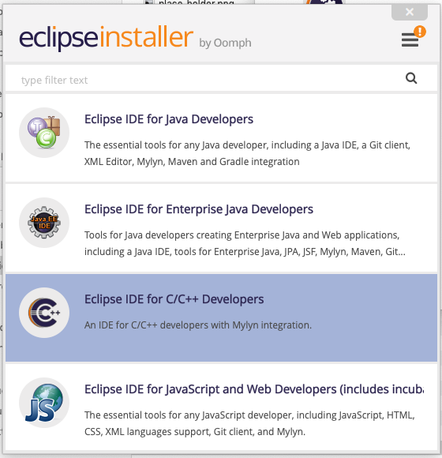
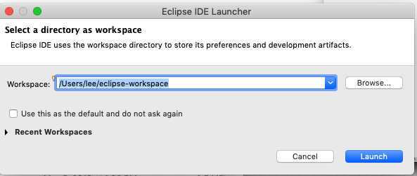
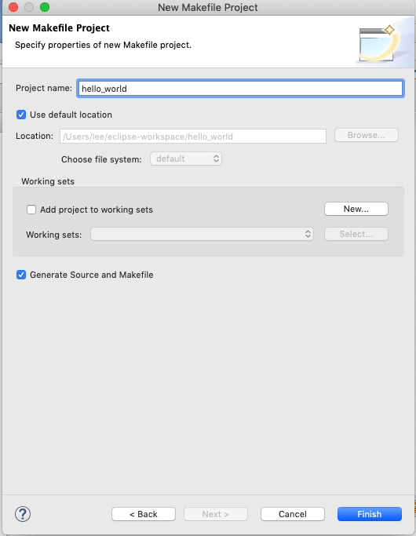
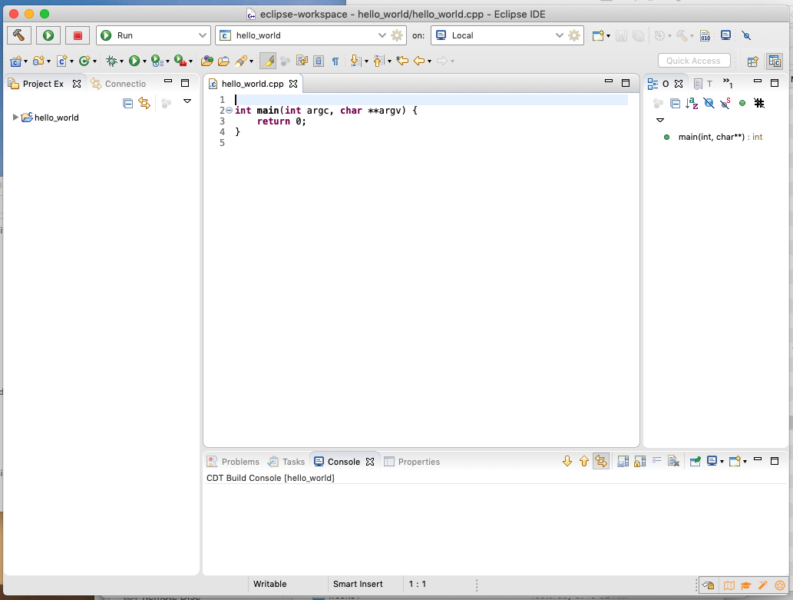
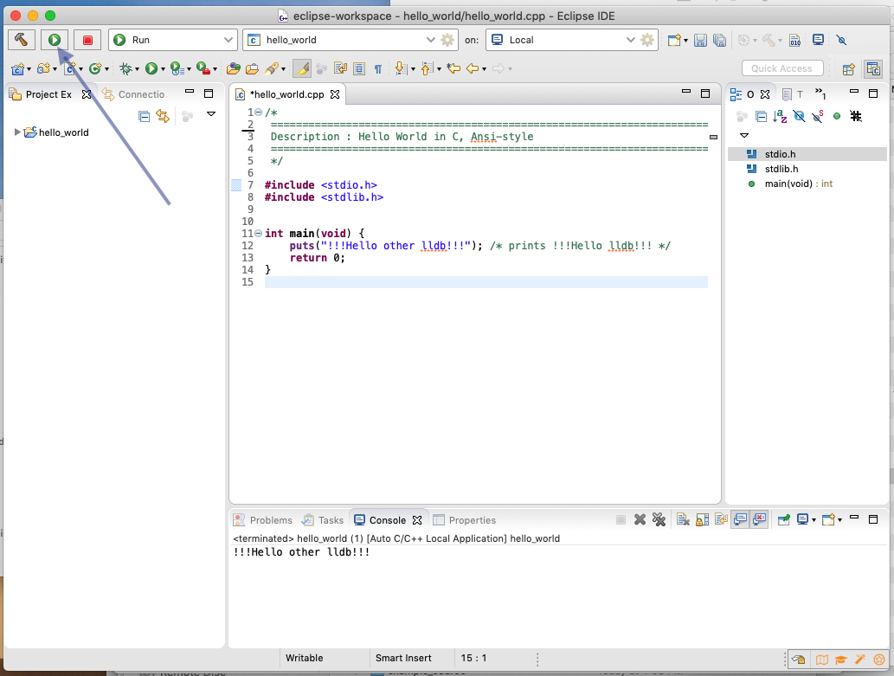

Installation and Purpose
Before and during the early 1970's, it was common to write operating systems in assembly, a low-level programming language. The first implementation of the Unix operating system was written in assembly to run on the PDP-7 computer and later was ported, by modifying the original assembly code, to the PDP-11. Since writing and porting assembly for larger systems is difficult, first Ken Thompson and later Dennis Richie decided to create languages to make this process easier. Thompson created the B language that Richie used as a starting point when creating the earliest versions of C. By the end of 1973, the Unix kernel had been rewritten completely in C, making it easier to port to new versions of hardware.
C, then, was a language designed for writting operating systems, device drivers, and other types of systems. The patterns you use when you write C are those you would use if you were writing code for the PDP-11. Thankfully, the portable C compiler lead the way to making C available on multiple hardware systems that don't follow the PDP-11 hardware patterns. While porting Unix is not an insignificant task, the C language has made several flavors of Unix such as Solaris, MacOS, HP-UX, the BSD variants, and AIX possible. Linux, a Unix-like system, is also written in C.
While you will not be writting code to run on a PDP-11, you pretend to do this anytime you use the C language. In computer science terms, you will write to the PDP-11 model even though you are writing code for a modern hardware architecture. The C compiler will do the conversion from model to hardware for you.
Take a look at Figure 1. It shows the ancestery of both C and Python. Since C is an ancestor of Python you can expect to see some things in C that remind you of what you learned about coding in Python. C is not Python's only ancester. A very strong contributor to Python is the Modula language. Because of this ancestry, modules exist in Python even though the are absent from C. Echos of Modulo's for-loops and ranges, among other things, can also be seen in Python. C has no concept of a range and, as you will see, the syntax and structure of for loops is different from what you learned for Python.
If it isn't already installed on your machine, start by installing minGW. Select the link, then watch and follow this video. The minGW link in the previous sentence takes you to the safe minGW download site. The video shows you an initial mingw.org page. Ignore that one. The second page the video shows you is the same as the one for this minGW download link.
Follow the instructions in the video.
If it isn't already installed on your machine, start by installing the Homebrew package manager. You can follow this video tutorial if you would like or follow the instructions on the Homebrew package manager page.
Once you have installed Homebrew, use it to install gcc. To do so, enter this code into the terminal;
If you previously installed gcc using brew, enter this code into the terminal;
Since various flavors of Linux can use different package managers, in your web browser, do a search that includes the name of your Linux distribution followed by gcc, and install. Follow the instructions you find.
The Integrated Development Environment (IDE) you use in this class is Eclipse. Download the 64 bit version from this site. This may require clicking a few buttons. The result is that you have downloaded the Eclipse IDE installer. Run the installer. Regardless of the platform (Windows, MacOS, Linux) you will see this window;
When you select Eclipse IDE for C\C++ Developers you will be lead through a complete installation. Use all the default values the installer suggests. Pay particular attention to and remember where Eclipse is being installed.
Run Eclipse. You will see this dialog;
Remember but don't change the location of the workspace. This is where all your code will be when you create files using Eclipse.
If you are running MacOS, you will need to follow these instructions before your debugger will work.
In the next window you are shown, select Create a new C/C++ project. Up will pop a new set of options for which kind of C application you want to create. For this class, select the Makefile Project type and then you will see this;
In this dialog, give your project a name...hello_world would be great...and click Finish At this point, you're almost ready. You should see this on your screen.
Copy the code below and use it to replace the code in hello_world.cpp.
Now your screen should look like this (without the big, blue, arrow).
If you click the icon pointed to by the big, blue, arrow, your project will build and run and you will see !!!Hello other lldb!!! in the Console tab at the bottom of the window.
Congratulations!! You have your system set up and tested!!!
Other text